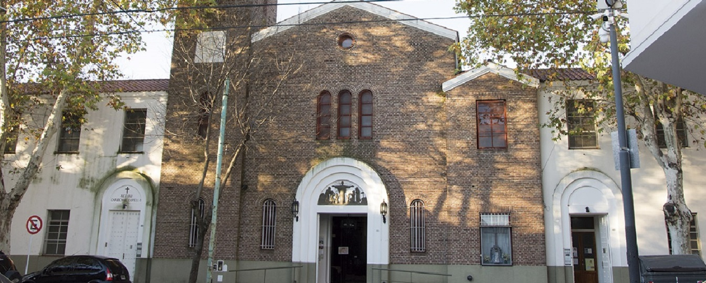
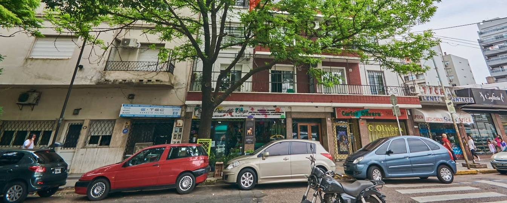
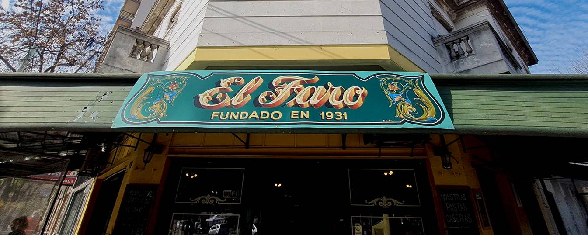

Inicio



Por la forma de sus calles, el barrio tiene muchas leyendas urbanas, destinadas a agrandar el mito de que cuando ingresa alguien no residente a Parque Chas, indefectiblemente se pierde.
Si alguien se animara a dar la vuelta completa, aparecerá en cualquier otro lugar del barrio Parque Chas, menos en el que debería.
La leyenda más famosa fue elaborada en las “Crónicas del Ángel Gris” de Alejandro Dolina, que invita a siquiera acercarse a suelo chasense.
Allí se precisa que está “prohibido” dirigirse a la manzana formada por las calles Berna, Marsella, La Haya y Ginebra, y que si se lo hace, se termina en cualquier otro lugar fuera del barrio. El relato sostiene que distintos exploradores y especialistas han fallado en su intento de vencer esa creencia.
Cuenta la historias que en 1957 un grupo de exploradores franceses aceptaron el desafío y, luego de intentarlo, aparecieron en Villa Urquiza, un barrio ubicado a 3 kilómetros.
Otra vez, unos urbanistas catalanes formaron dos equipos y caminaron en dirección opuesta con la idea de que se encontrarían en la mitad. No fue así: después de unos largos minutos, uno de los grupos apareció caminando detrás del otro.